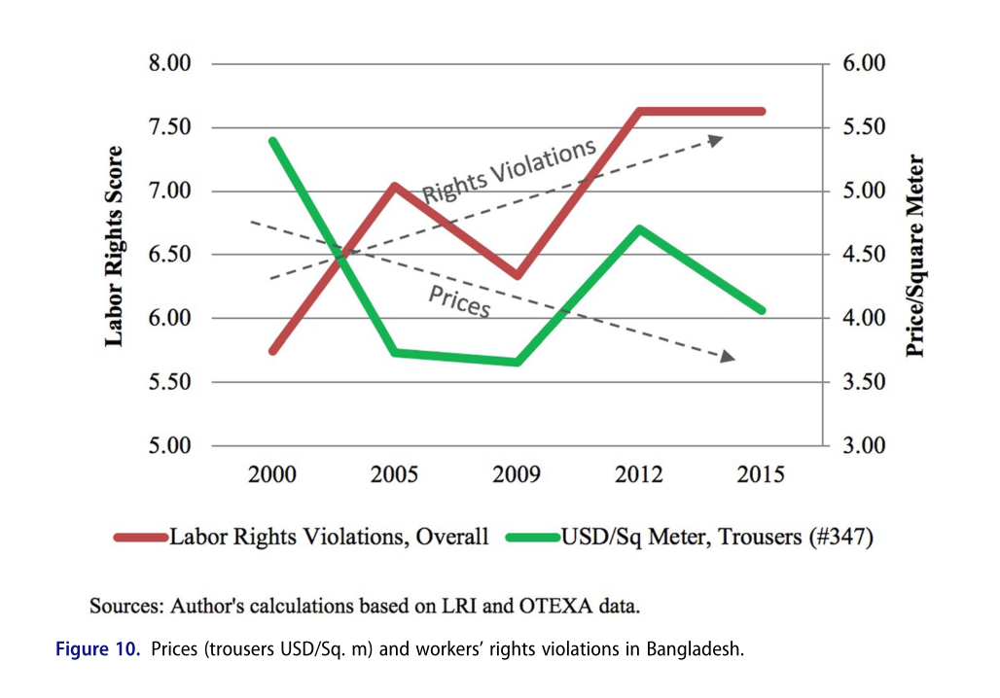

Lecture 7.2
The Gendered Legacy of Reform
Emmanuel Teitelbaum
Economic Crises
Sri Lanka
- Swimming in the president’s pool
- Causes of the crisis
- Years of economic mismanagement under Rajapaksas
- Rajapaksa govt. cut taxes after it came to power in 2019
- Banned fertilizer which decimated rice crop (staple)
- COVID-19 killed demand for tourism and remittances
- Then war in Ukraine led to grain shortages
- Sri Lanka ran out of money couldn’t by fuel or medicine
Discussion
Lebanon
When robbing a bank seems perfectly justified
Read about the World Bank’s assistance to Lebanon
How is the Bank’s strategy similar to or different from its strategy in Sri Lanka?
Which strategy is better, the one being pursued in Sri Lanka or the one being pursued in Lebanon?
Women and the Washington Consensus
Discussion 1
- What does Benaría mean by the term “feminization of labor” How is it manifested in the following sectors/activities?
- Manufacturing
- Agriculture
- Services
- Migration
- Human Trafficking
Discussion 2
- Benería identifies three potential effects of women’s employment on gender relations.
- Liberating
- Intensifying
- Reconstitution of gender inequalities
- Describe each of these. Which effect do you think is the strongest?
Policy Models
Policy Models
- What policies effectively increase women’s empowerment?
- Three (that we’ll consider)
- Empowerment through development
- Electoral quotas
- Empowerment through finance/microcredit
- Two things to consider
- Effectiveness
- Attainability
Development and Empowerment (Duflo)
- Discussion
- Development –> Empowerment
- How does development empower women?
- Is development the solution to discrimination and VAW?
- Empowerment –> Development
- What does Duflo mean by “empowerment”?
- Is empowering women the answer for development?
- What does Duflo mean by “empowerment”?
Gender Quotas (Beaman)
- Districts randomly selected for reserved seats
- Some districts selected more than once
- Basic findings
- Districts selected twice in a row see changes in how parents view daughters and how girls perceive themselves
- Districts selected twice in a row see improvements in educational outcomes for girls
- No effects on labor force participation and education outcomes for older women
- Mechanisms:
- Changing policies (which changes beliefs)
- Providing role models
Grameen Bank
Muhammad Yunus
- Winner of Nobel Peace Prize (and GW President’s Medal)
Inspired by stool makers of Jobra village
- Earned 2 cents per day
Set up Grameen bank to fill credit void for rural women
Repayment based on trust
Think About
- Which Model is Most Compelling?
- Development
- Gender Quotas
- Microcredit
- Why?
Women in the Apparel Sector
Apparel Sector in Low-Income Countries
- Women making up the majority of the workforce in apparel
- Employment is concentrated in low-income countries in Asia and Latin America
- Workers often face exploitative working conditions, including long hours and unsafe environments
- Wages are typically below living wage standards, trapping workers in cycles of poverty
- The sector’s reliance on low-cost labor perpetuates gender inequality and exploitation
Voluntary Compliance
- A system where companies self-regulate adherence to labor and environmental standards without legal enforcement
- Relies on corporate codes of conduct and industry standards rather than government regulations
- Third-party audits are often used to assess compliance
- Designed to promote ethical practices but participation is generally optional for companies
Problems with Voluntary Compliance
- Critics argue it lacks accountability and often fails to protect vulnerable workers effectively
- Vulnerabilities have been pushed down to more informal and unregulated suppliers outside of the formal supply chain
- Generally private governance initiatives ignore freedom of association and collective bargaining rights
- Worker empowerment is crucial, but must be pursued within an unequal economic context
Global Apparel Pricing
Bangladesh Pricing
Pricing and Labor Rights
Rana Plaza Collapse

Global Framework Agreements
- Alliance for Bangladesh Worker Safety
- Mostly American companies
- Not legally binding
- Expired after five years, not renewed
- Accord on Fire and Building Safety in Bangladesh
- Mostly European companies
- Legally binding
- Renewed after 5 years but undermined by garment manufacturers in Bangladesh
Trade Unions
- Trade unions in developing countries male-dominated
- Tied to political parties
- INGOs undemocratic, lack connection to workers